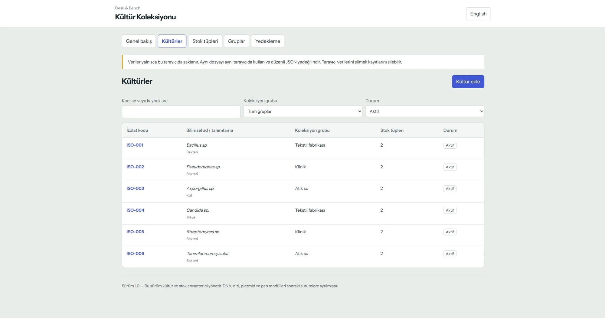

Kültür Koleksiyonu
Kültür kayıtlarını ve stok konumlarını kendi bilgisayarında tut. Gruplarını kendin belirle, her izolata birden fazla tüp ekle ve yedeklerini indir.
Sürüm 1.0. Tek bilgisayarda çalışan çevrimdışı HTML aracı. Hesap ve kurulum gerekmez.

Kültür Koleksiyonu neler yapar?
Çalışmana uygun gruplarla kültürlerini ve stok tüplerini bir arada tutar.
Kendi grupların
Klinik, atık su, tekstil fabrikası veya istediğin başka bir ad. Grubun adını değiştirirken kültür bağlantıları korunur.
Kültürler ve stok tüpleri
İzolat kodunu, tanımlamayı, kaynağı ve tarihi kaydet. Her kültüre benzersiz kodlu birden fazla stok tüpü bağla.
Saklama konumları
Her tüpün sıcaklığını, cihazını, rafını, standını, kutusunu ve gözünü kaydet. Yedek, kullanımda veya tükendi durumunu seç.
Arama ve yedekleme
Koleksiyonda ara ve filtrele. Kültürü arşivlerken stokları ve geçmişi koru. JSON yedeği ve CSV raporları indir.
Kullanım
- ZIP dosyasını indirYukarıdaki düğmeyi kullan.
- Kalıcı bir klasöre çıkarAynı dosya konumunu ve aynı tarayıcıyı kullan.
- culture-collection.html dosyasını açChrome, Edge veya Firefox kullan. Dili araç içinden değiştirebilirsin.
- Gruplarını oluştur ve yedek alKültürlerini ve tüplerini ekle. Düzenli JSON yedekleri tut.
Sorular
Kayıtlar nerede saklanır?
HTML dosyasının içinde değil, kullandığın tarayıcının yerel veritabanında saklanır. Sunucuya gönderilmez. Tarayıcı verilerini silmek veya gizli pencere kullanmak kayıtları kaybettirebilir. JSON yedeğini sakla.
Aracı nasıl taşırım veya güncellerim?
Dosyayı taşımadan, yeniden adlandırmadan veya güncellemeden önce JSON yedeği al. Yeni kopyayı açıp yedeği yükle. Yükleme tüm koleksiyonun yerini alır; birleştirme yapmaz. Yalnızca HTML dosyasını kopyalamak kayıtları taşımaz.
Bilgisayarlar arasında eşitlenir mi?
Hayır. Bu sürüm tek bilgisayarda yerel kullanım içindir. Firebase bağlantısı ve otomatik bulut eşitlemesi yoktur. CSV raporlama içindir; geri yüklemede JSON kullan.
DNA ve dizi kayıtları var mı?
İlk sürüm kültür ve stok envanterini kapsar. DNA, dizi, plazmid ve gen modülleri henüz yoktur.